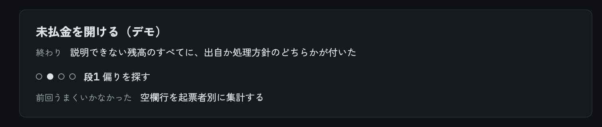
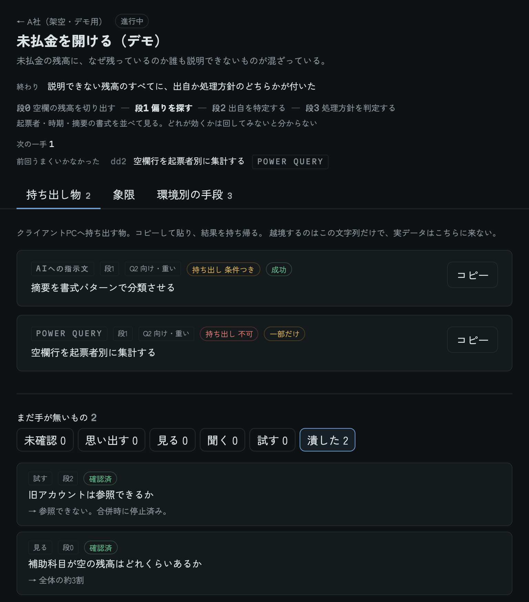
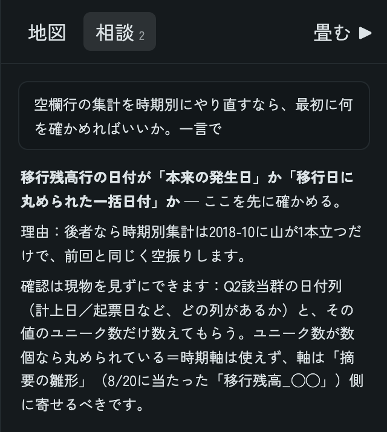

クライアントのPCでは、自分のAIは使えない。実データも持ち出せない。だから自分のAIは設計する側に回し、現場には指示だけを渡す。そのための道具「Whitebox」を作り、5社が2段階で合併し、複雑化した会社の未払金残高で回した。
経理業務のレビュー・検証が煩雑です。これは内部の経理担当がやっても、外部の私がやっても変わりません。やっていることは、大きく3つに分かれます。
未払金の総額は合っています。取引先別で見ても合っています。合わないのは、補助科目別に見たときだけです。会計上は正しいので、これまで見送られてきました。
補助科目で明細を遡っても、突合できません。合併のたびに各社の補助科目が混ざったまま持ち込まれ、起票のときにどの補助科目を使うかのルールも決まっていないので、同じ性質の取引が別々の補助科目に入っています。相殺されて消えていく中に、何年も前の1件だけが、なぜか残っている。それを見つけるまでに、何十往復もします。
決算は締まります。だから、補助科目の中身だけが、誰にも究明されないまま残ります。
会計システムはどの会社にも昔からあります。手入力の時代のデータがそのまま残り、さらに合併のたびに、時間がない中で複数のシステムを無理やり統合する。不要なデータが残ったまま集約され、取引先の情報が入り混じります。
経理は日々のルーティンに追われていて、データを整理する時間を取れない。誰も手を付けないまま、堆積だけが進んでいきます。
請求書の自動読込、SaaS連携。効率化はした。でも整っていない土台にそのまま繋いだので、複雑さが増して手が付けられなくなりました。
会計システムだけが整理されていないから、他のシステムと突合できない。
DXが言われた時代からずっと、ここが詰まっていました。
8月のグループセッションで一番刺さったのは、メンバーの視座の高さだった。面倒ごとがたくさんあって、あれもこれも直したいという強い気持ち。それは自分にも共通する。ただ自分は、忙しさの中で後回しにしてしまうことがある。
この「後回し」は、会計システムの汚れが積み上がるのと同じ形をしている。最終成果物としては間違っていない。誰のミスでもないし、緊急でもない。だから見て見ぬふりのまま、10年積み上がる。
その仕組みを内側から知っているから、それに対抗する道具が作れる。そして半年前の自分には、それを作る手段がなかった。
自分のAIが使えない現場で、経理が自分で会計システムの中を調べるための「設計側」の道具
会社が用意したAIはあっても、機能が限られていることが多い。積み上げてきたやり方が、一番使いたい場所で使えません。
手元に持ち帰って解析する、ができない。見られるのは、その会社のPCの中だけです。
設計する側
仮説を立て、指示を組む
実データは一度も見ない
実行する側
実データに触れる
会社が許可したAIだけが読む
会社のPCに持ち込むのは、貼るだけで動く指示（Power Query、VBA、数式、会社のAIへの指示文）だけ。
1つの会社に、悩みごとの入口（画面では「切り口」）を並べる。今回の会社では3つ。未払金の未消込残を特定する、仕訳の承認ルールを作る、CFの作成と分析を効率化する。
入口にはそれぞれ、終わりの条件、いまの段、次の一手が出る。どの悩みから手を付けるかは現場次第なので、どこからでも入れる形にした。
写真はすべて架空のデモの会社です。

写真は横にスクロールできます

写真は横にスクロールできます
画面の右に、会社の前提と「何を持ち出してよいか」のルールを知ったAIがいる。相談すると、新しい切り口や指示を提案してくる。提案はそのまま登録されず、人が下書きを直してから登録する。

5社が2段階で合併した会社の未払金で、明細を1本に積み、補助科目を揃えたうえで、消し込みを3段で回した。
確かめる経路を、道具の中に作った
経理の当事者として、「見て見ぬふりの1つ目は『その他』の欄だ」と覚えていた。それを答えとして書かず、確かめる前の仮説としてアプリに置いた。
あとから別々の日に、別々の切り口で、実データが裏付けた。
逆に、記憶が外れたこともある。「繰越は仕訳の中にある」「取引先コードが空欄の行は多い」は、どちらも実データで外れた。おかげで、明細を前後に切るクエリも、空欄を分類する仕組みも、作らずに済んだ。当たっても外れても、確かめたことで次の一手が決まった。
補助科目の名前の表記を揃える処理（正規化）を、1日で5回直した。うち3回は、元の名前と揃えたあとの名前を並べた表を目で見て気づいた。集計の数字だけを見ていたら、気づかないまま結論を出していた。
件数では見えないものが、金額で見えたこともある。
「残っていていいか」は金額の問いなので、金額で見る。
会社の情報をAIに提案させ、人が承認してから記録する仕組みにした。最初の1件で、AIは渡していない比率を自分で計算して書き足してきた。計算は正しかったが、計算で出せる数字は記録に持たないと決めているので、承認の場で落とした。
会計システムに組み込まれたAIアシスタントに仕訳を探させたら、条件が2つ以上になると毎回どれか1つを黙って落とした。
0件が返っても、無いのか、読み違えたのか区別できない。
だから、会社のAIに指示を渡すときの形の候補を残した。条件は1つずつ足して、そのたびに件数を確かめる。0件が出たら条件を1つ外して、件数が戻るかを見る。
器はあったのに、仕事を前に進める入口が無かった
アプリには、確かめることの一覧（未確認）、現場に持ち込む指示（持ち出し物）、相談できるAIが揃っていた。それでも実際の往復は、アプリの外のチャットで回っていた。数字を読み、次に何を測るかを決め、判定を書く。その全部がアプリの外にあった。制作は1週間止まった。
未確認のまま残っていたのは36件（会社全体18・CF14・未払金4）。やるべきことははっきりしていた。未払金の未消込残を特定する、仕訳の承認ルールを作る、CFの作成と分析を効率化する。それなのに、アプリを開いても、その3つにまっすぐ向かえなかった。
アプリが持っていたのは「分かっていないこと」の一覧だけだった。「どこまで行けば終わりか」「いまどこにいるか」「次に何をやるか」が無かった。
3つの悩みそれぞれに、終わりの条件と、そこまでの段を持たせた。いまの段は自分で選ぶ。どこまで進んだかは、人が判断することだから。次の一手は、アプリがいまの段の中から並べる。いまの段に関係ない未確認は出てこない。
未払金を開くと、次の一手は5件になった。同じ日の現場で開いた1件は、その中の1件にあたる。
自分のAIが入れない現場でも、使えなくなるわけではない。実データに触れる役は会社のAIとExcelに任せ、自分のAIは指示を組む側に回す。越境させるのは、指示だけでいい。
当事者の記憶は、確かめる前はまだ答えではない。仮説として置き、実データで確かめる。当たっても外れても、次の一手が決まる。
件数では誤差に見えるものが、金額では一番大きいことがある。「残っていていいか」は、金額の問い。
確かめることの一覧を溜めても、仕事は前に進まなかった。終わりと、いまの位置が見えて、はじめて道具は回る。